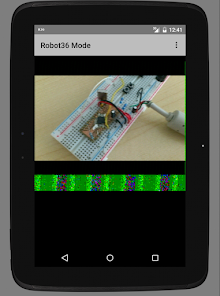

阳台上那根八木天线，和手机里的 Robot36
一个周末的下午，我带着手台和自制转接线蹲在阳台，用一部 Android 手机接住了来自 400 公里上空的图像信号。
故事从一通电话开始
那是十一月的一个周六下午，窗外飘着细雨。我正窝在沙发里翻 Ham Radio Deluxe 的日志表，手机突然响了——是杭州的火腿朋友老陈。
"今晚 ISS 过境，莫斯科那边发 SSTV，参数已经同步到群里了。你那边角度怎么样？"
我打开预测软件看了一眼。仰角最高 47 度，持续六分钟。窗口不算太好，但也不算没机会。
"行，我准备一下。"挂了电话，我盯着桌上那台 Yaesu FT-60R 手台，又看了看墙角那根攒了半个月才焊好的八木天线。天线是装好了，但手机接收音机音频这件事我一直没搞定——之前试过用 3.5mm 对录线直接插，结果满屏雪花噪点，调了半小时音量也没救回来。
那条音频线比我想的难搞
老陈之前跟我提过，业余圈里解 SSTV 基本都用 Robot36官网，软件本身是免费开源的，问题全出在接线。我翻了一圈他发我的文档，才知道我之前犯了好几个新手错误。
首先，手机麦克风输入和收音机线路输出根本不是一回事。收音机那边是 1V 左右的线路级信号，手机麦克风要的是毫伏级，直接硬接等于把音箱输出怼进耳机孔，不削波才怪。其次，手机麦克风自带 2.2V 的直流偏置电压，要是不隔开，这个电压会倒灌进收音机输出端，轻则失真，重则烧元件。还有地线环路的问题——我家的 USB 充电器插着的时候，音频线上能测出 50Hz 的工频干扰，画面里会莫名出现横向条纹。
那天下午我翻出万用表、电烙铁和从淘宝凑的元件，照着文档里的音频转接线方案搭了一条。核心元件是一个 1:1 的 600Ω 音频变压器，用来做电气隔离。初级侧串了个 2.2kΩ 电阻做衰减，次级跨了个 100Ω 阻尼电阻防止谐振，中间隔了一个 2.2µF 的薄膜电容挡直流偏置，最后在麦克风检测脚和地线之间焊了个 2.2kΩ 电阻让手机认出这是个外接麦。
焊完之后用万用表通断档测了三遍，确认没有虚焊和短路，才敢插进手机。
第一次听到 SSTV 的音调
把官方下载的软件装好之后，我先把天线架到了阳台栏杆上，手台调到了老陈给的频率，音量旋钮拧到了大概三分之一的位置。然后我打开 Robot36，把音频源切换到外接麦克风，盯着界面上的电平仪表慢慢调。
仪表一开始只有 30% 左右，我开了点增益，指针爬到了 70% 多一点，稳定住了。就是这个区间——文档里说 70% 到 85% 是解码质量最好的范围，低于 50% 噪点太多，超过 85% 又会削波失真。

等了大概十分钟，频谱图上突然出现了规律的条纹——不是背景噪声那种乱跳的波纹，是整齐的、横向移动的细线条。SSTV 信号来了。
我屏住呼吸，手没敢碰任何东西。Robot36 自动识别出了模式：Robot 36。36 秒一幅图，时间够。画面从左边开始一行一行扫出来，先是灰蒙蒙的轮廓，然后颜色慢慢填上去。我看到了蓝色的地球边缘，看到了白色的云层，还有右下角 ISS crew 的标志。
六分钟。那六分钟里我忘了拍照，忘了发朋友圈，甚至忘了呼吸。等最后一行像素落到屏幕上，Robot36 自动保存了图片。我点开相册，那是一张从 400 公里外的轨道上发下来的照片，清晰得让我不敢相信。
信号差的时候怎么办
第一次成功之后，我以为以后每次都能这么顺。事实证明我太乐观了。
接下来的几次过境，有的仰角太低，信号弱到电平仪表只有 40%，满屏雪花。有的赶上阴雨天气，电离层扰动严重，行同步总是断，图像从中间劈成两半，上半部分还能看，下半部分就歪歪扭扭地重复。还有一次我忘了关收音机的静噪，信号刚弱一点就被切没了，Robot36 等了半分钟也没等到完整的一帧。
翻Robot36文档才知道，这些都是常态，不是软件的问题。业余无线电嘛，就是跟老天爷玩概率。但有几个技巧确实管用。
第一个是录下来离线解。信号不好的时候别急着实时调电平，先录一段 WAV 文件下来，等过境结束了用 Robot36 的文件模式慢慢解。文件模式有个 Turbo 加速，不播放声音纯解码运算，速度快很多，而且可以反复解——第一次参数不对，手动指定模式再来一次，总能调到满意的效果。

第二个是电平仪表一定要盯着。我后来养成了习惯，每次接收前先花三十秒调电平，确保在 70% 到 85% 之间稳定住。哪怕信号来了也要盯着，不要碰音量旋钮——中途电平骤降半秒就可能导致行同步断掉，整帧图像的下半部分就废了。
第三个是模式别全信自动检测。Robot36 的自动识别大部分时候准，但偶尔也会把 Robot 36 当成 PD 120，或者反过来。颜色错乱的时候先手动指定正确模式再解一次，比瞎调增益有用得多。
没有耳机孔的手机怎么办
我用的是一台老款 Pixel，还保留着 3.5mm 耳机孔，所以转接线能直接插。但身边不少朋友用的是取消了耳机孔的新手机，要么 Type-C 要么 Lightning。这个问题我后来也帮他们研究过。
Type-C 手机关键是转接头能不能支持麦克风输入。便宜的转接头很多只支持输出不支持输入，插上之后手机检测不到外接麦，Robot36 还是用内置麦克风收，相当于白接。靠谱的方案要么选 Pixel 原装的双向 TRRS 转接头，要么买带独立 DAC 芯片的。iPhone 用户简单一些，Apple 官方的 Lightning 转 3.5mm 转接头是支持麦克风输入的，第三方的就要认准 MFi 认证。
追求音质的话还有个更干净的方案——USB 声卡加 OTG 线。USB 声卡的线路输入信噪比通常比手机内置的模拟电路好不少，而且部分声卡自带增益旋钮，调电平特别方便。缺点是成本略高，而且有些 Android 机型需要特定系统版本才能驱动。
那些故障排查教会我的事
解码出来画面有噪点怎么办？颜色错乱怎么办？行不同步怎么办？这些问题我全都遇到过。
满屏雪花的时候先查电平——低于 50% 就开大音量或加增益，再检查音频线有没有松动，收音机静噪关了没有。颜色错乱但轮廓能看清，八成是模式不匹配，手动指定正确模式再解一次就行。图像从中间断成两半，说明解码中途信号断了哪怕零点一秒，下次接收的时候别碰任何东西，或者干脆录下来离线解。大面积横向条纹的话，看看旁边有没有充电器或者 UPS 电源——工频干扰就是这么来的，把手机和收音机挪远一点就好。
我后来把这个故障排查表打印出来贴在了电台桌旁边，每次出问题对照着一条条查，比上网搜快多了。
收尾
现在每次 ISS 过境，我还是会准时守在阳台。六分钟的窗口，调电平、等信号、看图像一行一行扫出来。有时候信号好能出两张图，有时候一张都解不出来。但这不重要——重要的是那根八木天线对着天上，手机里的程序在认真地工作，而我坐在小板凳上，听着 SSTV 那熟悉的音调，想着这是来自四百公里外的问候。
老陈说他下个月来上海出差，带他那台更好的接收机。到时候我们找个晚上一起守过境，他负责调天线，我负责盯电平，看看能不能解到更高清的 PD 180 模式。到时候再跟大家汇报结果。
对了，Robot36 的音频转接线元件参数和解码故障排查清单我都整理了一份资料，GitHub、Gitee、GitCode 三个仓库都有同步，国内访问直接走 Gitee 更快。